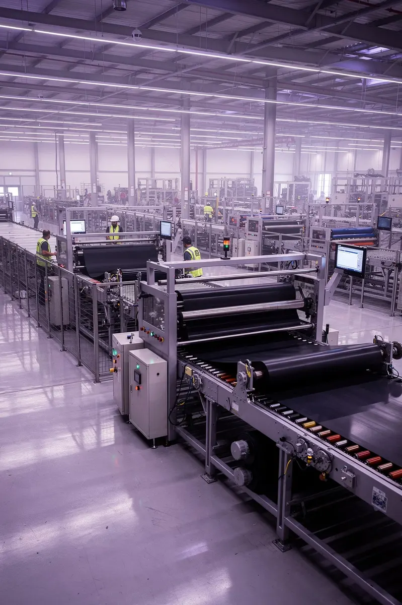

How MOTM Supported Growth for an Industrial Belt Manufacturer with Export Expansion

The client is a well-established industrial belt manufacturer based in India, with a legacy of producing high-quality rubber and V belts tailored for industrial power transmission systems.
Client snapshot
- Industry
- Industrial belts for power transmission
- Headquarters
- India
- Experience
- 20+ years of manufacturing
- Export markets
- United States, Russia, Egypt and other regions
Product range
The product portfolio includes a wide range of industrial belts used in machinery and industrial applications, such as:
- V Belts (including cogged, narrow, and wrapped variants)
- Poly V Belts
- Hexagonal V Belts
- Harvester & Lawn Mower Belts
- Kevlar Cord Belts
These products are engineered for durability, strength, and consistent performance in demanding environments. The company is also active in exporting its products globally, serving international customers with premium rubber and transmission belts.
The challenge: unstructured market access
Despite strong product demand and proven manufacturing capabilities, the company faced significant barriers to systematic international growth. Market expansion efforts were fragmented and heavily dependent on founder involvement.
- International outreach: Inconsistent engagement with potential markets
- Importer identification: Manual, time-intensive research processes
- Decision-maker access: Limited pathways to key stakeholders
- Follow-up tracking: No systematic approach to nurturing leads
- Pipeline visibility: Low transparency into export opportunities
- Resource dependency: Heavy reliance on founder bandwidth
Why MOTM was the right partner
The company recognized that sustainable international growth required a dedicated partner who could transform market access from an ad-hoc activity into a systematic capability. They needed more than consulting—they needed execution.
- Relevant importer identification: Systematic research to pinpoint qualified importers across target geographies who matched product specifications and market positioning
- Decision-maker access: Direct pathways to C-level executives and procurement leaders who could authorize distribution partnerships
- Consistent follow-up: Multi-touch engagement sequences across different time zones and cultural contexts to maintain momentum
- Extended sales team: An execution partner who could operate as an extension of their internal capabilities, not just provide recommendations
What MOTM did
MOTM deployed a comprehensive market penetration methodology combining deep research, targeted outreach, and systematic follow-up. The approach transformed export development from founder-led efforts into a scalable, repeatable process.
This structured methodology ensured no opportunity was lost to inconsistent execution while building a foundation for long-term international pipeline development.
Execution model: MOTM operates as an ongoing execution partner, not a one-time project. This ensures consistent market presence and relationship development across international time zones and business cultures.
Measurable execution results
MOTM's systematic approach delivered tangible outcomes that moved beyond activity metrics to real business impact. The focus remained on quality conversations and qualified opportunities rather than vanity numbers.
- Active international pipeline established: A sustainable funnel of opportunities at various stages, providing visibility and predictability to export revenue forecasting
Transformational business impact
The transformation extended beyond metrics to fundamental changes in how the company approaches international market development—from reactive opportunism to proactive strategic execution.
Client testimonial
“MOTM helped us identify the right companies and importers and connect with decision-makers. They worked as an extension of our team and converted research into real business opportunities.”
This feedback underscores MOTM's value proposition: not just providing insights or recommendations, but delivering hands-on execution that drives measurable business outcomes. The partnership model enables manufacturing companies to access international markets without building entirely new internal capabilities.
Key takeaway: from ad-hoc to systematic
This case study demonstrates how export-focused manufacturers can transform international expansion from founder-dependent, inconsistent outreach into a repeatable, scalable system. MOTM's approach bridges the gap between product excellence and market access.
- Before: Ad-hoc efforts, limited visibility, founder dependency
- Partnership: Structured research, systematic engagement, extended team
- Outcome: Repeatable export system, qualified pipeline, predictable growth
Ready to structure your international expansion?
MOTM's proven methodology can help manufacturing companies establish systematic market access and build sustainable export pipelines.
Get a similar plan for my businessClient identity withheld for confidentiality. Logos and client names are shared only with permission.